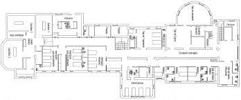

Para poder salir adelante y no estar tan asfiados con el tema de las camas uci. Primero deberiamos de organizar bien como estas van a estar desplegadas en todo el hospital, tener una especie de plano con cada una de las camas uci. Las familias no van a poder entrar a la zona donde se encuentre internado el paciente para evitar la concurrencia y solo los personales autorizados van a poder ingresar.
To be able to get ahead and not be so suffocated with the issue of ICU beds. First we should organize well how these are going to be deployed throughout the hospital, have a kind of plan with each of the ICU beds.
